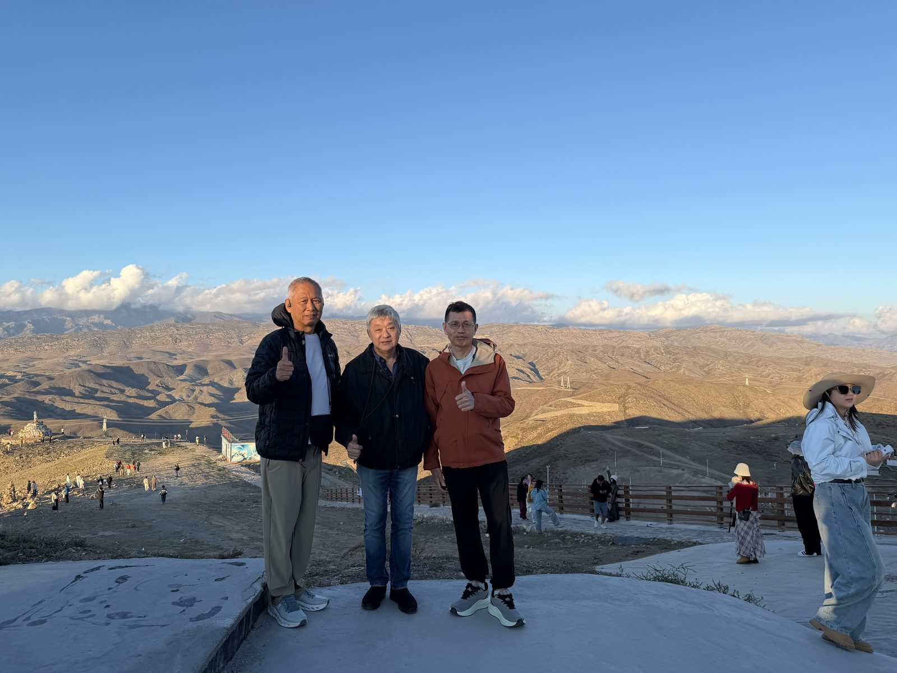
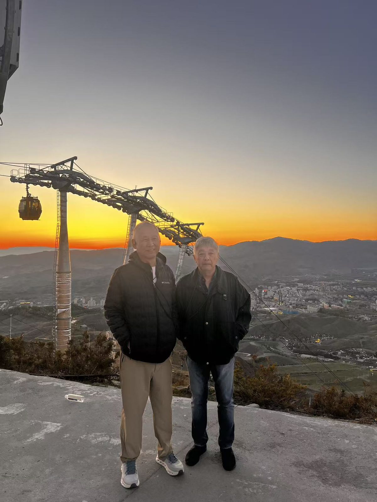
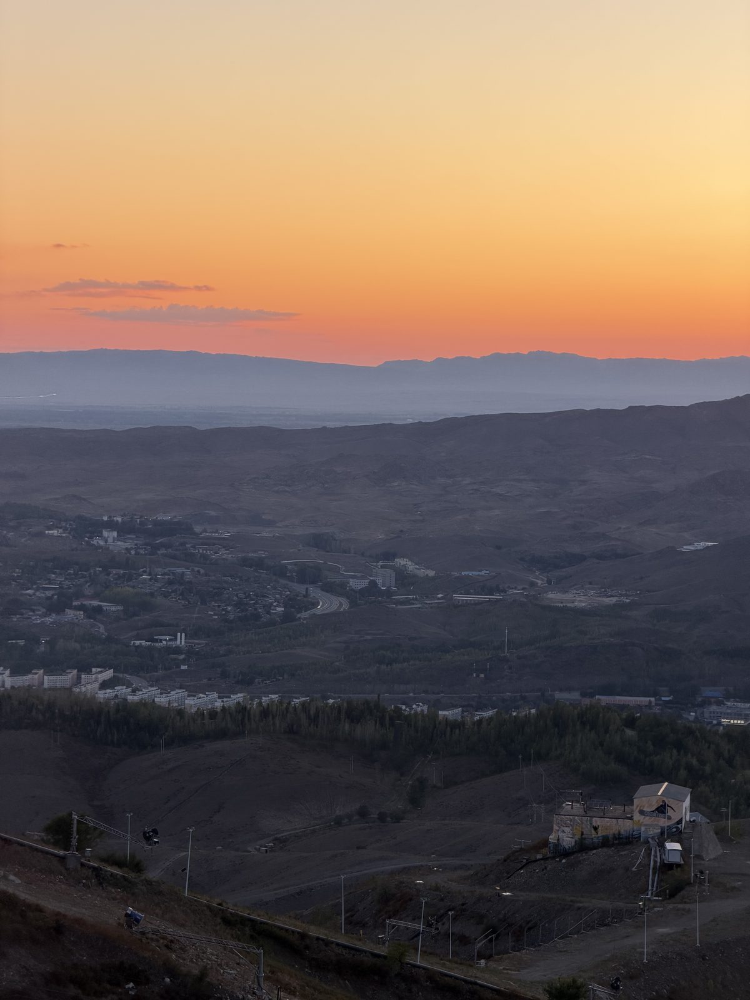

Day Log
Up the cable car, down after dark
Went up the mountain by cable car in the late afternoon. The plan was just to look at the view. We ended up staying for the whole sunset, which was the right call.

Bone-dry hills in every direction, folded like crumpled paper, and a town tucked in the valley below with one road curling through it. Cold enough at the top for jackets, even though it was warm in town when we set off.

Then the light went. Ten minutes of orange along the whole horizon, the town lights coming on one by one underneath, and nobody saying much.

Walked back to the top station in the half-dark and rode down. Good day.